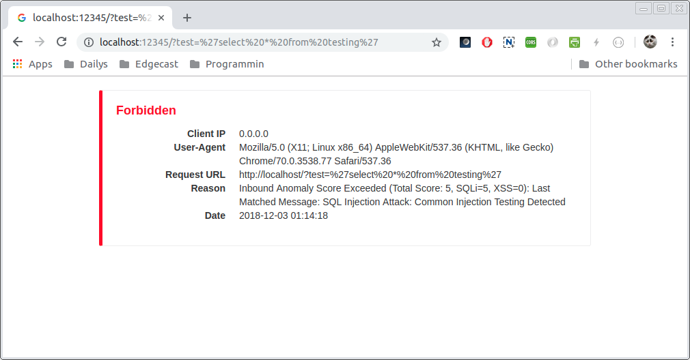
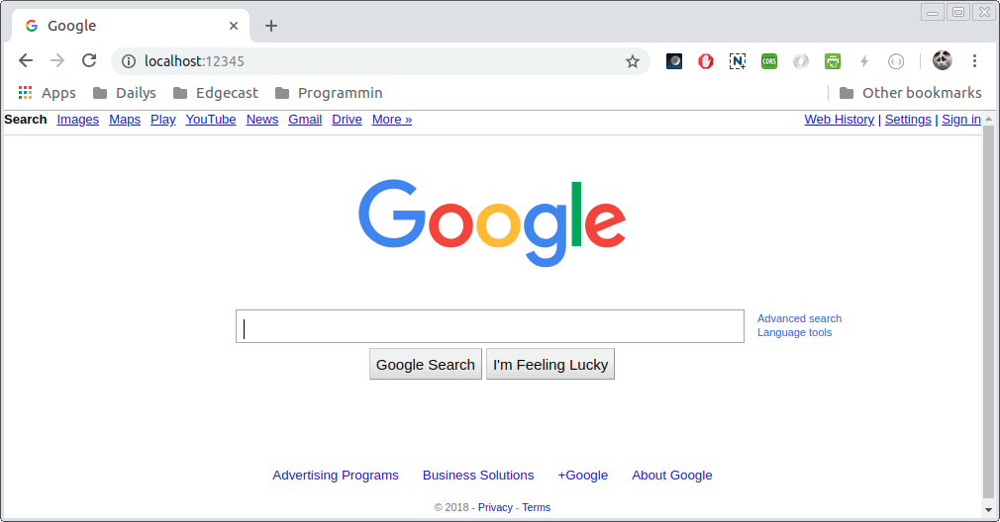

waflz_server¶
waflz_server is a waflz test utility for verifying the behavior of the engine with a given ModSecurity rule config, or profile. waflz_server is an http server can run in 1 of 2 modes.
In standard mode, respond with the
waflzalert that would have fired.In proxy mode, either proxy or block with a 403 page.
standard mode¶
run waflz_server
waflz/build>./util/waflz_server/waflz_server -r ../tests/data/waf/ruleset -g ../tests/data/waf/db/GeoLite2-City.mmdb -s ../tests/data/waf/db/GeoLite2-ASN.mmdb -f ../sample/profile/sample.waf.prof.json
curl in another terminal
curl -s 'localhost:12345/index.html?test=%27select%20*%20from%20testing%27'
{"req_info":{"epoch_time":{"sec":1543799321,"nsec":1906062027},"virt_remote_host":"MC4wLjAuMA==","server_canonical_port":12345,"request_method":"R0VU","orig_url":"L2luZGV4Lmh0bWw/YnV0dHM9JTI3c2VsZWN0JTIwKiUyMGZyb20lMjB0ZXN0aW5nJTI3","url":"L2luZGV4Lmh0bWw/YnV0dHM9JTI3c2VsZWN0JTIwKiUyMGZyb20lMjB0ZXN0aW5nJTI3","query_string":"YnV0dHM9JTI3c2VsZWN0JTIwKiUyMGZyb20lMjB0ZXN0aW5nJTI3","common_header":{"host":"bG9jYWxob3N0OjEyMzQ1","user_agent":"Y3VybC83LjU4LjA="},"req_uuid":"YWFiYmNjZGRlZWZm"},"rule_msg":"Inbound Anomaly Score Exceeded (Total Score: 5, SQLi=5, XSS=0): Last Matched Message: SQL Injection Attack: Common Injection Testing Detected","rule_intercept_status":403,"rule_target":[{"name":"TX","param":"ANOMALY_SCORE"}],"rule_op_name":"gt","rule_op_param":"0","rule_tag":["OWASP_CRS/ANOMALY/EXCEEDED"],"matched_var":{"name":"ARGS:test","value":"J3NlbGVjdCAqIGZyb20gdGVzdGluZyc="},"total_anomaly_score":5,"total_sql_injection_score":5,"total_xss_score":0,"sub_event":[{"rule_id":981318,"rule_msg":"SQL Injection Attack: Common Injection Testing Detected","rule_intercept_status":403,"rule_target":[{"name":"REQUEST_COOKIES","param":"/__utm/","is_negated":true},{"name":"REQUEST_COOKIES_NAMES"},{"name":"ARGS_NAMES"},{"name":"ARGS"},{"name":"XML","param":"/*"}],"rule_op_name":"RX","rule_op_param":"(^[\\\"'`´’‘;]+|[\\\"'`´’‘;]+$)","rule_tag":["OWASP_CRS/WEB_ATTACK/SQL_INJECTION","WASCTC/WASC-19","OWASP_TOP_10/A1","OWASP_AppSensor/CIE1","PCI/6.5.2"],"matched_var":{"name":"ARGS:test","value":"J3NlbGVjdCAqIGZyb20gdGVzdGluZyc="},"total_anomaly_score":5,"total_sql_injection_score":5,"total_xss_score":0,"waf_profile_id":"WAF Test 13","waf_profile_name":"Koala Blocking Profile"}],"waf_profile_id":"WAF Test 13","waf_profile_name":"Koala Blocking Profile"}
proxy mode¶
run waflz_server -note the proxy host specification --proxy=https://www.google.com
waflz/build>./util/waflz_server/waflz_server -r ../tests/data/waf/ruleset -g ../tests/data/waf/db/GeoLite2-City.mmdb -s ../tests/data/waf/db/GeoLite2-ASN.mmdb -f ../sample/profile/sample.waf.prof.json --proxy=https://www.google.com
in browser

with a bad url¶

with a ok url¶